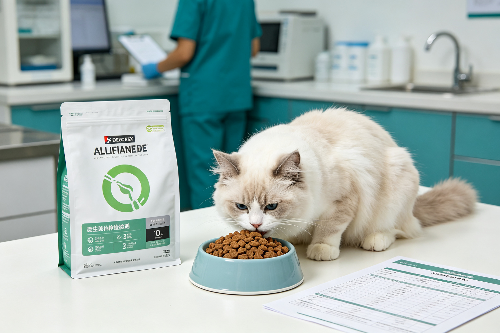
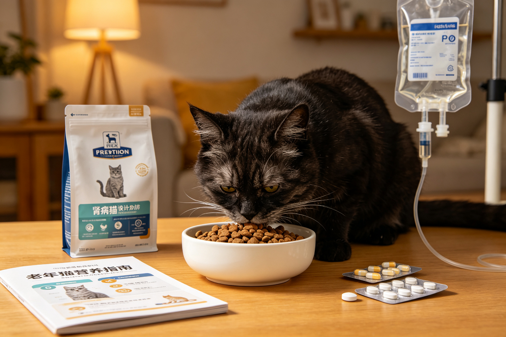
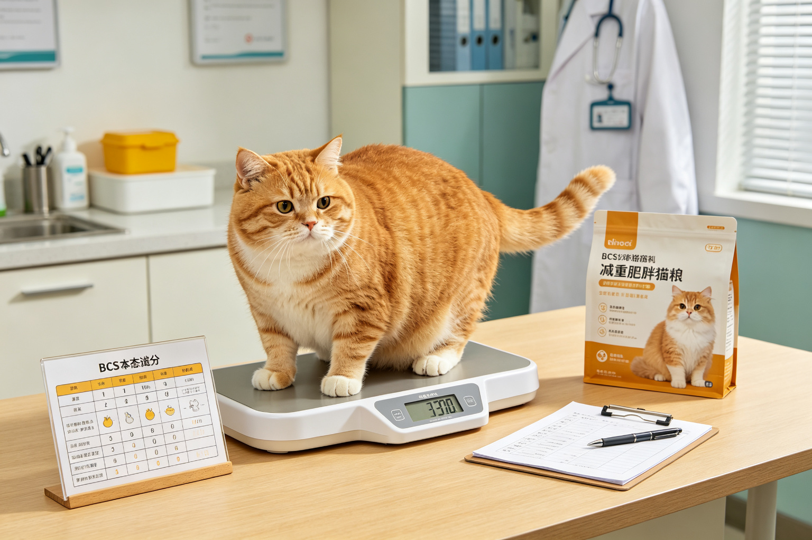

貓糧推薦：成分、營養價值與適口性比較
貓糧是貓咪健康的基礎——成分不好可能導致過敏、腎病、肥胖。2026年10款熱門貓糧評比：成分來源（肉類vs肉粉vs副產品）、營養保證值（蛋白...

寵物外出包推薦：透氣性與航空公司認證
寵物外出包是帶寵物出門的必備品——透氣不好會中暑、安全性不夠可能逃脫、不符合航空公司規定無法登機。2026年8款熱門寵物外出包評比：透氣性（...

寵物美容工具推薦：指甲剪、梳子與電剪
寵物美容工具選對了可以在家輕鬆美容，選錯了可能受傷或造成寵物陰影。2026年10款熱門寵物美容工具評比：指甲剪（ Guillotine vs...

狗窩推薦：記憶棉與大型犬支撐力
狗窩的好壞直接影響狗狗的關節健康與睡眠品質——尤其是大型犬和高齡犬。2026年8款熱門狗窩評比：支撐力（記憶棉密度、骨科泡棉）、尺寸適合性、...

貓跳台推薦：穩定性、高度與材質比較
貓跳台是貓咪的垂直領土——不夠穩會晃、太高貓咪不敢上、材質不好貓咪不喜歡抓。2026年10款熱門貓跳台評比：穩定性（底座重量與結構）、高度與...

寵物攝影機推薦：畫質、夜視與雙向語音
寵物攝影機讓你上班時也能看到家裡的毛孩，還可以雙向語音和投零食。2026年8款熱門寵物攝影機評比：畫質解析度、夜視效果、雙向語音清晰度、零食...

自動餵食器推薦：雙電源與App功能比較
自動餵食器是忙碌飼主的救星，但卡糧、斷電、App連線不穩可能讓寵物挨餓。2026年10款熱門自動餵食器評比：雙電源設計、防卡糧機制、出糧精準...

寵物飲水機推薦：馬達噪音與濾芯成本比較
寵物飲水機可以增加貓狗的飲水量，但選錯了可能噪音太大、清潔困難、濾芯太貴。2026年8款熱門寵物飲水機橫評：有線vs無線、塑膠vs不鏽鋼、馬...

貓砂盆推薦：開放式、封閉式與自動鏟屎機
貓砂盆是貓家庭最重要的用品之一——選錯了貓咪可能拒絕使用或亂尿。2026年最新10款貓砂盆實測：開放式、半封閉式、全封閉式、頂入式、自動鏟屎...

智慧寵物用品資安風險：餵食器被駭案例
智慧寵物用品連接Wi-Fi後，也帶來了資安風險——自動餵食器被駭可能隨機出糧或停止餵食、寵物攝影機被駭可能被窺視隱私、智慧項圈被駭可能洩露住...

寵物除臭噴霧成分：酵素與化學除臭劑
寵物除臭噴霧市場充斥各種產品，但除臭機制完全不同——酵素靠生物分解有機物、生物製劑靠益生菌抑制臭味菌、化學除臭劑靠中和或覆蓋。從各種除臭機制...

寵物項圈與牽繩強度標準：尼龍與皮質
寵物項圈與牽繩的強度直接關係到安全——牽繩斷裂可能導致狗狗走失或車禍，項圈扣環鬆脫可能造成嚴重後果。從各種材質的拉力測試數據（尼龍、皮質、戰...

寵物窩墊支撐力測試：記憶棉與乳膠
寵物窩墊的材質直接影響關節健康——尤其是高齡寵物和關節炎寵物，不合適的窩墊可能加重關節疼痛。從各種填充材質的支撐力測試（記憶棉、乳膠、棉花、...

貓抓板材質比較：瓦楞紙、劍麻與木頭
貓抓板是每個貓家庭的必需品，但不同材質的耐用度與貓咪接受度差異很大——瓦楞紙便宜但不耐用、劍麻耐用但貓咪不一定喜歡、實木高級但價格昂貴。從各...

寵物電子用品電磁輻射與安全性
越來越多寵物電子用品進入家庭——自動餵食器、飲水機、智慧項圈、除蚤項圈，這些電子產品的電磁輻射與安全性如何？從常見寵物電子用品的輻射檢測數據...

寵物玩具材質安全：乳膠、橡膠與尼龍
寵物玩具的材質直接影響安全性——廉價塑膠可能含有害塑化劑、乳膠可能引起過敏、尼龍碎片被吞下可能造成腸道阻塞。從常見玩具材質的特性比較、耐咬度...

寵物洗毛精成分解讀：SLS與防腐劑
寵物洗毛精的成分表常常佈滿化學名詞——SLS/SLES是清潔劑、Paraben是防腐劑、香精可能引起過敏。不是所有化學成分都有害，但有些的確...

貓砂除臭機制：活性炭、沸石與酵素比較
貓砂除臭不是靠香味覆蓋——真正的除臭涉及吸附、化學分解、微生物抑制等不同機制。活性炭靠多孔結構吸附臭味分子、沸石靠離子交換捕捉氨氣、酵素靠生...

寵物心理學大眾迷思：專家說的和你以為的
「貓咪很高冷」「狗狗搖尾巴就是開心」「兔子很笨」——這些大眾對寵物心理的常見認知，很多其實是迷思。動物行為學家的研究告訴我們：貓咪不是高冷而...

電影中的狗狗：從忠犬小八到海底總動員
狗狗在電影中一直是受歡迎的角色——《忠犬小八》的忠誠感動全球、《101忠狗》的斑點狗造成飼養熱潮、《海底總動員》的狗狗角色帶來歡笑。從好萊塢...

文學中的貓：從愛倫坡到村上春樹
貓咪在文學中有著特殊的地位——愛倫坡的《黑貓》是恐怖文學經典、村上春樹的小說中貓咪是常見角色、夏目漱石的《我是貓》用貓的視角諷刺人類社會。從...

寵物時尚產業崛起：衣服與生日派對消費
寵物時尚已經不是給狗穿件衣服這麼簡單——寵物時裝週、寵物名牌、寵物生日派對、寵物婚紗、寵物美甲，整個產業的市場規模超過數百億美元。從寵物時尚...

為什麼現代人叫自己貓奴狗奴？
過去寵物是「看家的」「抓老鼠的」，現在越來越多飼主自稱「貓奴」「狗奴」，將寵物視為「主子」「孩子」。這個人寵關係的翻轉不是偶然——從都市化與...

寵物殯葬文化興起：火化與紀念花園
越來越多飼主將寵物視為家人，寵物過世後的後事處理也從隨意丟棄變成正式的殯葬儀式——寵物火化、骨灰壇、紀念花園、寵物墓園、寵物寵物寵物寵物寵物...

狗狗工作歷史：牧羊犬、搜救犬與導盲犬
狗狗被人類馴化超過15000年，與人類的合作關係深植於歷史之中——從狩獵時代的幫手、農業時代的牧羊犬與守衛犬、工業時代的雪橇犬與警犬，到現代...

日本貓文化：招財貓、貓站長與貓島
日本是世界上最貓咪友善的國家之一——招財猫是全球知名的吉祥物、貴志站有貓站長小玉、瀨戶內海有貓島、秋葉原有貓咖啡廳。從日本貓文化的歷史源頭（...

貓咪如何成為網際網路統治者
貓咪是網際網路的無冕之王——YouTube上貓咪影片的觀看次數超過數十億，迷因圖（meme）中貓咪佔據主導地位。從最早的LOLcats網站、...

都市貓室內環境豐容：小公寓狩獵需求
都市貓終年住在室內，空間有限、刺激不足，容易出現無聊、肥胖、行為問題。環境豐容（Environmental Enrichment）是解決方案...

寵物計程車與接送服務：Uber Pet比較
帶寵物出門時，大眾運輸不方便、自己沒有車，這時候寵物計程車就是救星。但不是每種計程車都接受寵物——Uber Pet需要額外付費、傳統計程車司...

公寓養大型犬：噪音、空間與鄰居關係
在公寓養大型犬（黃金獵犬、拉布拉多、哈士奇等）面臨很多現實挑戰——空間不足、噪音投訴、鄰居關係、電梯禮儀。從公寓養大型犬的空間配置、噪音管理...

寵物友善餐廳：全台連鎖與獨立餐廳比對
越來越多餐廳標榜寵物友善，但「友善」的定義差異很大——有些可以落地跑、有些只能放籠子、有些只接受戶外座位、有些需要額外收費。從全台連鎖餐廳的...

城市遛狗法律責任：牽繩與排泄物規定
在城市遛狗不是牽著狗走就好——法律對牽繩長度、排泄物清理、攻擊事件的責任都有明確規定。從各縣市的牽繩規定、排泄物清理的法律要求、狗狗攻擊人或...

帶貓旅行準備清單：外出籠與旅館選擇
多數貓咪不喜歡旅行，但有時候不得不帶貓出門——搬家、探親、旅行。帶貓旅行的準備從出發前幾週就要開始：適應外出籠、減壓產品、車內安全、旅館選擇...

台北市寵物公園地圖與評比
台北市有超過20處寵物公園，但品質參差不齊——有些有完善的柵欄和飲水設備，有些只是一塊空地。從台北市主要寵物公園的地圖、設施評比、大小與圍欄...

租屋族養寵：寵物友善租屋與簽約注意
租屋族養寵最頭痛的就是找房子——多數房東不願意租給有寵物的房客，即使願意也可能要求高額押金。從尋找寵物友善租屋的管道、如何說服房東、簽約時的...

大眾運輸帶寵物規則：台鐵高鐵捷運公車
帶寵物搭大眾運輸不是每種交通工具都可以——台鐵可以裝籃、高鐵有特殊規定、捷運各縣市不同、公車司機有決定權。從全台大眾運輸的寵物規定比對、容器...

異寵常見急症：哪些症狀需要立刻就醫
異寵的疾病進展很快，而且很多物種會隱藏症狀——等到明顯生病時可能已經為時已晚。爬蟲的拒食與呼吸困難、兔子的胃腸鬆滯與牙齒過長、嚙齒類的濕尾與...

鳥類認知能力：鸚鵡語言與工具使用
鳥類的大腦結構和哺乳類完全不同，但認知能力卻超乎想像——非洲灰鸚鵡可以理解100多個單字的含義，新喀鴉可以製造和使用工具，鸚鵡會表現出嫉妒與...

蛇類飼養環境配置：加熱墊與隱藏窩
蛇類的飼養看起來簡單，但環境配置的細節決定了蛇的健康與進食意願——溫度不對會拒食，沒有隱藏窩會緊張，濕度不對會蛻皮失敗。從蛇類的溫度梯度設定...

蜜袋鼯社會需求：為什麼不能單獨飼養
蜜袋鼯是高度社會性的動物——單獨飼養會導致嚴重的心理問題，包括自我傷害、抑鬱、過度吠叫甚至死亡。從蜜袋鼯的野外社會結構、單獨飼養的後果、如何...

陸龜溫度與光照需求：保溫燈與UVB
陸龜的飼養核心是溫度與光照——不正確的溫度梯度會導致消化不良，UVB不足會造成代謝性骨病，冬眠不當可能致命。從陸龜的溫度梯度設定（熱點35-...

綠鬣蜥飼養誤區：為什麼多數活不過3年
綠鬣蜥是最常被誤養的爬蟲之一——多數人用小飼養箱、燈泡加熱、餵生菜，結果綠鬣蜥在2-3年內就因代謝性骨病或腎衰竭死亡。從綠鬣蜥的真實體型（可...

兔子消化道生理：為什麼需要24小時進食
兔子的消化道和貓狗完全不同——牠們是後腸發酵動物，需要24小時不斷進食來維持消化道蠕動，還會吃自己的盲腸便來回收營養。從兔子的消化道結構、盲...

倉鼠品種比較：黃金鼠、三線鼠、老公公鼠
倉鼠不只是倉鼠——不同品種的個性、體型、壽命與照護需求差異很大。黃金鼠（敘利亞倉鼠）體型大但孤獨、三線鼠（加卡利亞）親人但容易糖尿病、老公公...

鬃獅蜥飼養：UVB、溫度與食性
鬃獅蜥是最受歡迎的爬蟲寵物之一，但多數飼主的飼養方式存在根本錯誤——UVB不足、溫度梯度不對、食物營養不均衡。從UVB燈的選擇與更換週期、熱...

幼犬幼貓發育異常辨識：健康警訊
幼犬幼貓的某些「可愛」行為可能隱藏著發育異常或健康問題——走路搖晃不一定是萌，可能是神經問題；肚子圓滾滾不一定是胖，可能是寄生蟲。從常見的發...

幼貓分離焦慮預防：建立獨處能力
幼貓時期沒有學會獨處的貓咪，長大後容易出現分離焦慮——過度嚎叫、破壞行為、隨地大小便。從幼貓分離焦慮的成因、5個從小建立獨處能力的方法、漸進...

幼犬恐懼期8-11週：如何避免創傷
幼犬8-11週會經歷第一個恐懼期——這個時期的負面經驗可能造成終身的恐懼與焦慮。從恐懼期的行為表現、常見的創傷來源、如何安全地進行社會化、正...

幼貓遊戲行為發展：狩獵練習與咬合力
幼貓的遊戲不是單純的玩——而是狩獵技能的練習、社會化的學習與咬合力控制的訓練。從幼貓遊戲的發展階段、同窩互動的重要性、咬合力控制的學習機制、...

幼犬斷奶與固體食物過渡：4-8週餵食
幼犬4週大開始斷奶，從母乳過渡到固體食物是一個關鍵階段——營養不足或過渡不當可能影響終身健康。從斷奶時機、奶糕選擇、泡軟方法、餵食頻率、營養...

幼貓疫苗與驅蟲：FVRCP與狂犬病
幼貓的疫苗與驅蟲需要按照年齡階段進行——錯過時機可能讓幼貓暴露在致命疾病風險中。從FVRCP三價疫苗、狂犬病疫苗、接種時間軸、體內外驅蟲（絛...

幼犬疫苗接種時間軸：核心疫苗與抗體
幼犬疫苗不是打一次就好——需要按照時間軸接種多劑才能建立有效免疫。從核心疫苗（狂犬病、犬瘟、小病毒、傳染性肝炎）、非核心疫苗（鉤端螺旋體、犬...

幼貓社會化與行為發育：2-7週定型期
幼貓2-7週的社會化決定了牠對人類、其他動物與環境的終身態度。這個時期沒有足夠人類接觸的幼貓，長大後可能怕人或具有攻擊性。從幼貓發育階段、社...

幼犬社會化關鍵期：3-14週發展指南
幼犬3-14週是社會化的黃金窗口——這個時期的經驗決定了狗狗一輩子的性格與適應力。從各種人、動物、環境、聲音、觸感到物品，完整的100種社會...

寵物臨終判斷與安樂死時機
何時該說再見？這是飼主最難的決定。品質生活量表（Quality of Life Scale）提供了一個客觀的評估框架，幫助你在情緒與理性之間...

高齡寵物睡眠變化：認知功能關聯
老狗半夜醒來走來走去、嚎叫、找不到窩——這不是「睡不好」，可能是認知功能退化或身體不適的訊號。從高齡寵物的睡眠生理變化、夜間躁動的常見原因、...

寵物安寧照護Hospice：生命品質管理
當寵物進入生命最後階段，治癒不再是目標——維持生命品質、減輕痛苦、陪伴走過最後旅程才是。從安寧照護的定義、疼痛評估、居家安寧準備、安樂死的時...

高齡貓甲狀腺機能亢進：症狀與治療
老貓體重下降但食慾變好、喝水變多、過度活潑——這可能不是「健康」，而是甲狀腺機能亢進。超過10%的10歲以上貓咪患有此病。從症狀辨識、診斷方...

老狗瓣膜性心臟病：症狀與治療
慢性瓣膜性心臟病是小型老狗最常見的心臟病——超過70%的10歲以上小型犬有不同程度的心臟瓣膜退化。從心雜音分期、症狀辨識、常用藥物（匹莫苯丹...

高齡寵物聽力視力退化：適應與環境改造
老貓老狗的聽力和視力會隨年齡退化——這是正常老化，但可以透過環境改造大幅提升生活品質。從退化症狀辨識、安全居家改造、與聽力視力受損寵物的溝通...

老貓慢性腎病CKD：分期與飲食管理
慢性腎病是老貓的頭號殺手——超過30%的10歲以上貓咪患有不同程度的腎病。從IRIS分期標準、症狀辨識、處方飼料選擇、皮下輸液操作到定期追蹤...

高齡犬關節炎：5個疼痛訊號與管理
老狗走路變慢、不愛跳沙發、起床後僵硬——這些可能是關節炎的早期訊號，不是「老了正常」。從疼痛行為學、5個易忽略訊號、藥物與復健管理到居家環境...

老貓認知障礙CDS：症狀與家庭管理
老貓半夜嚎叫、忘記貓砂盆位置、對主人反應變差——可能不是「老了正常」，而是貓咪認知障礙（CDS）。從症狀辨識、獸醫診斷到藥物與環境調整，完整...

寵物食物過敏：診斷與處方飼料選擇
貓咪狗狗皮膚癢、拉肚子、反覆耳炎——可能不是環境過敏，而是食物過敏。從食物過敏vs食物不耐受的區分、排除飲食試驗的正確做法、水解蛋白飼料的原...

老貓老狗營養需求：腎臟、關節與認知
7歲以上的老貓老狗，營養需求和年輕時完全不同——蛋白質要增加而非減少、磷要控制、關節補劑要提早。從高齡寵物的代謝變化、常見慢性病的飲食管理、...
寵物食品防腐劑與添加劑：安全與風險
寵物食品中的防腐劑、抗氧化劑、著色劑、風味劑——這些化學名詞讓飼主頭痛。從天然vs人工防腐劑的安全性比較、BHA/BHT/乙氧基奎寧的爭議、...

生肉飲食BARF：好處、風險與科學證據
BARF（生肉飲食）在寵物圈越來越流行，但獸醫營養學界對此仍有爭議。從營養均衡性、細菌污染風險、骨骼碎裂危險到支持與反對的科學證據，完整的中...

寵物肥胖：為什麼超過50%的寵物過重
全球超過50%的貓狗過重或肥胖——這不是「圓滾滾比較可愛」，而是會縮短壽命2-3年的健康危機。從肥胖判定方法（BCS體態評分）、熱量計算、減...

貓咪泌尿道結石與飲食：pH值與水分
貓咪泌尿道結石是常見且危險的疾病——公貓尿道阻塞可能致命。從結石類型（草酸鈣vs鳥糞石）、尿液pH值管理、鎂離子控制到處方飼料的選擇與水分增...

寵物食品標籤怎麼看：成分表與保證值
寵物食品包裝上的標籤是一場文字魔術——「含雞肉」不等於「雞肉為主」，「保證值」要看乾物基礎才準。從成分表排序規則、營養保證值解讀、常見行銷話...

狗狗可以吃素食嗎？營養學分析
狗狗是雜食動物，理論上可以吃素食——但「可以」不等於「適合」。從狗狗的消化系統、必需胺基酸需求、素食狗糧的常見缺陷到需要補充的營養素，完整的...

貓咪為什麼是專性肉食動物？營養學解析
貓咪不能吃素不是因為挑食，而是演化賦予的代謝限制——貓咪無法自行合成牛磺酸、精胺酸和維生素A。從代謝路徑、缺乏症到商業貓糧的配方邏輯，營養學...

響片訓練：Shaping方法訓練複雜行為
響片不只能教「坐下」——用Shaping（行為塑造法）可以訓練轉圈、鞠躬、開冰箱等複雜行為。從連續接近法、標記時機到常見卡關解決方案，響片進...

狗狗為什麼會吃草？營養與本能解析
狗狗吃草不是因為營養不良——多數情況下是正常的本能行為。從演化遺傳、腸道蠕動刺激到需要就醫的警訊，完整解析狗狗吃草的科學原因與飼主應對方式。...

狗狗焦慮訓練：去敏感化與反向制約
狗狗怕雷聲、怕陌生人、怕去獸醫——恐懼不是用「勇敢一點」就能解決的。去敏感化、反向制約、Threshold訓練是行為學公認的3大恐懼治療法，...

狗狗召回訓練：為什麼叫不回來
狗狗放繩就叫不回來是多數飼主的痛點。召回不是靠喊大聲，而是靠建立「回來=好事」的強烈聯結。從常見錯誤、環境干擾管理到10步驟漸進式召回訓練，...

幼犬咬手咬腳：制止方法與常見錯誤
幼犬愛咬人不是兇狠，而是在學習咬合力控制。用手推開、大聲罵只會強化咬人行為。從社會化窗口、同窩學習理論到正向替代行為訓練，科學終止幼犬咬人。...

狗狗為什麼會翻肚子？行為學解析
狗狗翻肚子不代表「臣服」——這個常見誤解可能讓你錯過狗狗的真正意圖。從演化行為學、肢體語言細節到互動脈絡，教你正確解讀狗狗翻肚子的3種含義。...

狗狗吠叫：6種類型與訓練方法
狗狗吠叫不是噪音，而是語言。警戒吠叫、需求吠叫、焦慮吠叫、無聊吠叫、興奮吠叫、強制性吠叫——6種類型的辨識與各自的訓練策略，用對方法才能有效...

狗狗牽繩拉扯：5步驟鬆繩行走訓練
遛狗被狗拉著跑是多數飼主的日常，但拉扯不是狗的錯——是溝通方式的問題。從狗的探索本能、拉力強化到5步驟鬆繩行走訓練法，從此遛狗不再像拔河。...

狗狗為什麼會撲人？5步驟修正方法
狗狗撲人不是討厭，而是過度興奮的問候方式。從幼犬時期的社會化、注意力尋求到正向強化的5步驟訓練，行為學家教你終止撲人行為。...

貓咪為什麼喜歡聞你的鞋子？嗅覺行為解析
貓咪見到你的鞋子就埋頭猛聞，不是因為腳臭味好聞，而是鞋子上承載了你的全天「資訊日誌」。從貓咪的嗅覺靈敏度、費洛蒙溝通到氣味記憶，科學解密這個...

貓咪分離焦慮：7個訊號與調整方案
貓咪也會有分離焦慮——過度舔毛、拒食、嚎叫、亂尿可能不是「調皮」，而是焦慮的表現。7個早期訊號辨識、行為調整步驟與何時需要專業協助的完整指南...

多貓家庭階級關係：如何判斷誰是老大
多貓家庭的和平不是靠運氣，而是靠理解貓咪的社會結構。從資源守衛、空間使用、肢體語言到介入時機，行為學家教你建立和諧的多貓家庭。...

貓咪為什麼會把東西撥下桌？狩獵本能解析
桌上的水杯、鑰匙、手機——貓咪總是能精準地把它們撥到地上。這是純粹的惡作劇，還是有更深層的行為學原因？從狩獵練習、注意力尋求到物體恆存概念，...

貓咪慢眨眼是在說我愛你嗎？表情行為學
貓咪緩慢眨眼被稱為「貓咪之吻」，但這真的是愛的表達嗎？從貓咪的視覺溝通、放鬆訊號到人貓互動的雙向影響，科學解讀這個溫柔的表情。...

貓咪夜間跑酷：為什麼凌晨3點最活躍
凌晨3點客廳傳來貓咪百米衝刺的腳步聲——這不是惡作劇，而是貓咪的演化時鐘在作用。從晨昏活動性、狩獵本能到室內貓的能量管理，完整解析。...

貓咪為什麼喜歡鑽紙箱？空間偏好心理學
貓咪見箱就鑽不是因為調皮，而是演化賦予的生存本能。從隱蔽狩獵、壓力荷爾蒙降低到環境掌控感，科學解讀貓咪的紙箱情結。...

貓咪尾巴姿勢：12種尾巴語言解讀
豎直、彎曲、夾腿、甩尾——貓咪的尾巴是最誠實的情緒測謊儀。12種尾巴姿勢的行為學意義完整圖解，從此讀懂貓咪心情。...

貓咪為什麼會踩奶？行為學解析
貓咪踩奶不是在做麵包，而是幼兒期哺乳行為的延續。從心理依附、神經化學到環境安全感，完整解讀貓咪踩奶的科學原因。...